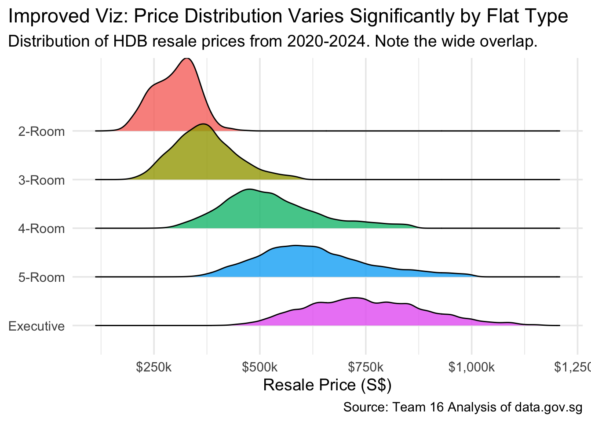

HDB Resale Trends: Analysis and Enhanced Visualization
Author
Team 16
Introduction
This document validates our cleaned data against the original Straits Times article, reconstructs the article’s visualizations, and presents three new, improved charts to uncover deeper insights into the HDB resale market from 2020-2024.
1. Setup and Load Cleaned Data
This first step loads the necessary libraries and reads the clean CSV files that were created by our data_cleaning.qmd script.
# --- 1. Setup and Load All Data ---# List of required packages for analysis and visualizationpackages <-c("tidyverse", "lubridate", "scales", "forcats", "ggridges", "plotly", "sf","patchwork")# Loop through each packagefor (pkg in packages) {# Install the package if it's not already installedif (!require(pkg, character.only =TRUE)) {install.packages(pkg) }# Load the packagelibrary(pkg, character.only =TRUE)}# Set global options for cleaner outputoptions(scipen =999)options(dplyr.summarise.inform =FALSE)# --- Load the CLEAN datasets from the previous script ---# Make sure these files are in a "data_output" subfolder.project_data <-read_csv("data_output/cleaned_hdb_resale_data.csv")percentage_change <-read_csv("data_output/percentage_change_analysis.csv")# Confirm that data is loadedcat("Clean data loaded successfully. project_data has", nrow(project_data), "rows.\n")
Clean data loaded successfully. project_data has 127606 rows.
2. Validation Against News Article
We first check if our data matches the key statistics cited in the article. This confirms the quality of our data preparation.
The original charts are simple bar charts. We can create far more insightful and visually appealing charts by exploring distributions, trends over time, and spatial patterns in the data.
Enhancement 1: Modern Price Distribution by Flat Type
A ridgeline plot shows the full range of prices, not just a single number. This reveals the significant overlap in prices between different flat types.
if (!require("ggridges")) {install.packages("ggridges")}library(ggridges)# --- CORRECTED CODE ---# Prepare data with a clean label for plottingplot_data <- project_data %>%filter(flat_type %in%c("2 ROOM", "3 ROOM", "4 ROOM", "5 ROOM", "EXECUTIVE")) %>%mutate(# Create the clean label (e.g., "2 ROOM" -> "2-Room")flat_type_label =str_replace(flat_type, " ROOM", "-room") %>%str_to_title() )# This ggplot call will now work correctly because `flat_type_label` existsggplot(plot_data, aes(x = resale_price, y =fct_rev(flat_type_label), fill = flat_type_label)) +geom_density_ridges(alpha =0.8, scale =1.5) +scale_x_continuous(labels = scales::dollar_format(scale =1e-3, suffix ="k")) +labs(title ="Improved Viz: Price Distribution Varies Significantly by Flat Type",subtitle ="Distribution of HDB resale prices from 2020-2024. Note the wide overlap.",x ="Resale Price (S$)",y =NULL,caption ="Source: Team 16 Analysis of data.gov.sg" ) +theme_minimal(base_size =14) +theme(legend.position ="none", plot.title.position ="plot")

Enhancement 2: Price Trends Over Time by Flat Type
A time series plot showing how prices evolved monthly, with smooth trend lines and confidence intervals.
This multi-panel dashboard, built with the patchwork package, provides a powerful, at-a-glance summary of the HDB resale market, combining price trends, transaction volumes, and market share into a single, cohesive view.
# Prepare summary statistics for the dashboardsummary_stats <- project_data %>%filter(flat_type %in%c("2 ROOM", "3 ROOM", "4 ROOM", "5 ROOM", "EXECUTIVE")) %>%mutate(flat_type_label =str_replace(flat_type, " ROOM", "-Room") %>%str_to_title()) %>%group_by(flat_type_label, year) %>%summarise(median_price =median(resale_price, na.rm =TRUE),median_psm =median(price_per_sqm, na.rm =TRUE),transaction_count =n(),.groups ="drop" )# Panel 1: Price evolution by yearp1 <-ggplot(summary_stats, aes(x = year, y = median_price, color = flat_type_label)) +geom_line(size =1.2, alpha =0.9) +geom_point(size =2) +scale_x_continuous(breaks =2020:2024) +scale_y_continuous(labels = scales::dollar_format(scale =1e-3, suffix ="K")) +scale_color_viridis_d(option ="plasma", begin =0.1, end =0.9) +labs(title ="A. Price Evolution by Year", x =NULL, y ="Median Price", color ="Flat Type") +theme_minimal(base_size =12) +theme(plot.title =element_text(face ="bold"), legend.title =element_text(face="bold"))# Panel 2: Transaction volume by yearp2 <-ggplot(summary_stats, aes(x = year, y = transaction_count, fill = flat_type_label)) +geom_col(position ="stack", alpha =0.8) +scale_x_continuous(breaks =2020:2024) +scale_y_continuous(labels = scales::comma) +scale_fill_viridis_d(option ="plasma", begin =0.1, end =0.9) +labs(title ="B. Transaction Volume by Year", x =NULL, y ="Transactions", fill ="Flat Type") +theme_minimal(base_size =12) +theme(plot.title =element_text(face ="bold"), legend.title =element_text(face="bold"))# Panel 3: Price per sqm comparisonp3 <-ggplot(summary_stats %>%filter(year %in%c(2020, 2024)), aes(x =fct_reorder(flat_type_label, median_psm), y = median_psm, fill =factor(year))) +geom_col(position ="dodge", alpha =0.8) +scale_y_continuous(labels = scales::dollar_format(prefix ="S$")) +scale_fill_manual(values =c("2020"="#440154FF", "2024"="#FDE725FF"), name ="Year") +labs(title ="C. Price per Sqm: 2020 vs 2024", x =NULL, y ="Median PSM") +theme_minimal(base_size =12) +theme(plot.title =element_text(face ="bold"), axis.text.x =element_text(angle=45, hjust=1), legend.title =element_text(face="bold"))# Panel 4: Market share by flat type in the last full year# We use 2023 for a full year's data, as 2024 is incomplete.market_share <- summary_stats %>%group_by(year) %>%mutate(market_share = transaction_count /sum(transaction_count)) %>%ungroup() %>%filter(year ==2023)p4 <-ggplot(market_share, aes(x ="", y = market_share, fill =fct_reorder(flat_type_label, market_share))) +geom_col(width =1, alpha =0.8) +coord_polar("y", start =0) +geom_text(aes(label = scales::percent(market_share, accuracy =1)), position =position_stack(vjust =0.5), color ="white", fontface ="bold") +scale_fill_viridis_d(option ="plasma", begin =0.1, end =0.9, guide="none") +labs(title ="D. Market Share by Flat Type (2023)") +theme_void(base_size =12) +theme(plot.title =element_text(face ="bold", hjust =0.5))# --- FIX IS HERE ---# Combine all panels using patchwork.# We wrap the main plot composition in parentheses to ensure it's evaluated# fully before the `&` operator is applied. This resolves the precedence issue.( (p1 + p2) / (p3 + p4) +plot_annotation(title ='HDB Resale Market Dashboard (2020-2024)',subtitle ='An overview of price evolution, transaction volumes, price efficiency, and market share.',caption ='Source: Team 16 Analysis of data.gov.sg',theme =theme(plot.title =element_text(face ="bold", size =22, hjust =0.5),plot.subtitle =element_text(size =14, hjust =0.5, color="grey40"),plot.caption =element_text(size=10, color="grey50") ) )) &theme(legend.position ="bottom", legend.box ="horizontal")